PromptSep-Speaker:
Generative Target Speaker Extraction via Multimodal Prompting and Semantic Alignment
1 Adobe Research 2 Massachusetts Institute of Technology
Model Overview
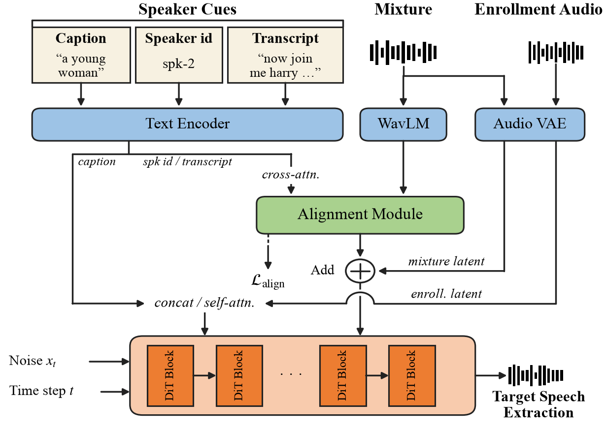
Abstract. Target speaker extraction (TSE) isolates a desired speaker from a multi-speaker mixture using cues that identify the target. Prior work has explored acoustic and textual cues, such as enrollment audio and different types of speaker descriptors, but typically relies on a single cue family. Yet no single cue is both broadly available and reliably discriminative. Moreover, most TSE systems adopt mask-prediction models, which are prone to audible artifacts and generalize poorly across acoustic conditions. To address these limitations, we propose PromptSep-Speaker, a generative TSE model based on latent diffusion that unifies four interchangeable cues: speaker temporal order, transcript, enrollment audio, and speaker caption. The generative formulation delivers higher separation quality and multimodal prompting improves applicability across scenarios. To fully exploit each cue, we further introduce a frozen WavLM representation with an auxiliary alignment loss that supervises query-mixture cross-attention without extra labeling. Across four evaluation sets and a listening study, PromptSep-Speaker achieves state-of-the-art performance over TSE and universal source separation baselines, improving separation accuracy and quality across cue modalities.
Section 1: Speaker ID cue, two talkers
The cue names the target by the order in which speakers begin talking. No public baseline accepts this cue.
| Speaker ID | Mixture | Target (reference) | PromptSep-Speaker (ours) |
|---|---|---|---|
| Speaker 1 (first to start talking) | |||
| Speaker 2 (second to start talking) | |||
| Speaker 1 (first to start talking) | 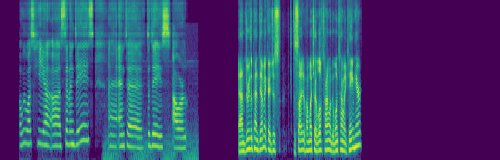 | ||
| Speaker 2 (second to start talking) | 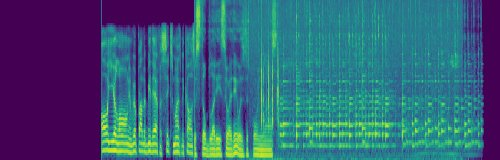 | ||
| Speaker 1 (first to start talking) |
Section 2: Speaker ID cue, three talkers
The same cue in three-talker mixtures.
| Speaker ID | Mixture | Target (reference) | PromptSep-Speaker (ours) |
|---|---|---|---|
| Speaker 1 (first to start talking) | 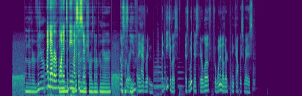 | ||
| Speaker 2 (second to start talking) | 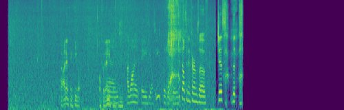 | ||
| Speaker 3 (third to start talking) | 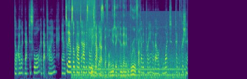 | ||
| Speaker 1 (first to start talking) | 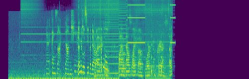 | ||
| Speaker 2 (second to start talking) | 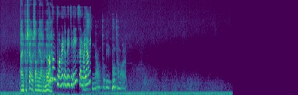 |
Section 3: Transcript cue
The cue is what the target says.
| Transcript | Mixture | Target (reference) | PromptSep-Speaker (ours) | DAE-TSE |
|---|---|---|---|---|
| “It was realizing that it's not about me anymore. It's about” | ||||
| “A brown roux you cook for much longer,” | ||||
| “But Mlock has certainly taken over the market, and we've moved ourselves into that direction on all of our platforms, including on the MDEX now.” | ||||
| “Because it's not me that's doing it, you know. I” | 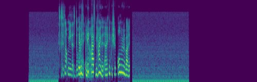 | 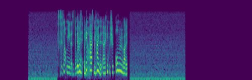 | ||
| “that kind of thing. There is this sense of a top-down instead of a grassroots approach, and a lot of people” |
Section 4: Partial transcript cue
Only a few of the target’s words: fewer than 60% of them, 3 to 8 words in total.
| Partial transcript | Mixture | Target (reference) | PromptSep-Speaker (ours) | DAE-TSE |
|---|---|---|---|---|
| “amazing views, as” | ||||
| “we return from the great” | 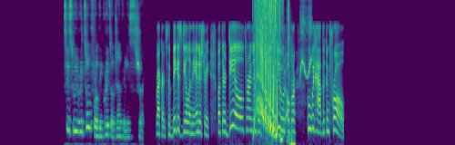 | 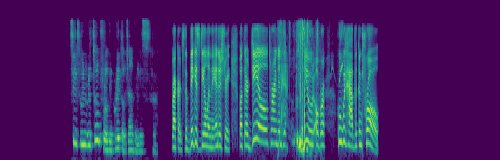 | ||
| “we are when when we” | 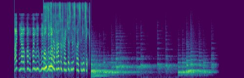 | 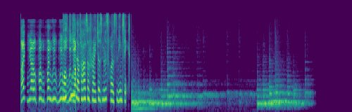 | ||
| “I love to play for a team in” | 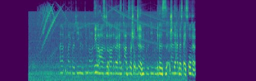 | 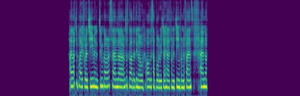 | 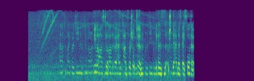 | |
| “between twenty and thirty minutes of” |
Section 5: Transcript cue, fully overlapped speech
Both utterances share an onset and offset, so the target is never heard alone.
| Transcript | Mixture | Target (reference) | PromptSep-Speaker (ours) | DAE-TSE |
|---|---|---|---|---|
| “or hesitate that it would work was the cheating in the twenties.” | 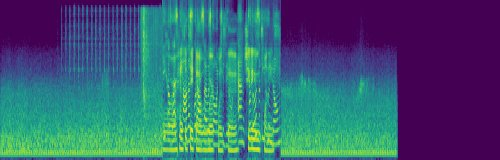 | 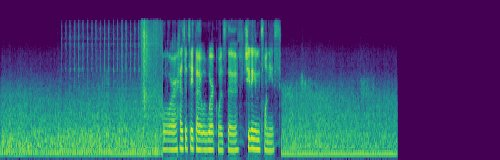 | ||
| “and you just love to hang out, and they make great” | ||||
| “Get deeply in the detail.” | 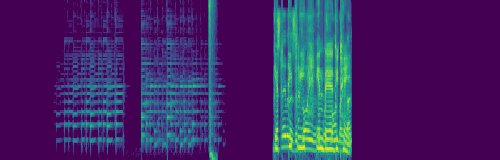 | 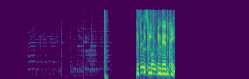 | ||
| “These are just a few of the traits that makes me feel so lucky to call Tiffany my best friend.” | ||||
| “we went to just this random like restaurant in the” | 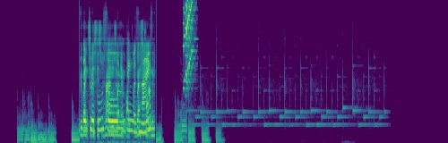 | 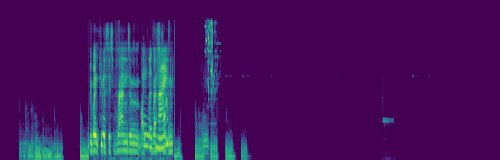 |
Section 6: Enrollment cue
The cue is a separate clip of the target’s voice.
| Enrollment audio | Mixture | Target (reference) | PromptSep-Speaker (ours) | WeSep | SoloSpeech |
|---|---|---|---|---|---|
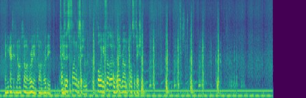 | 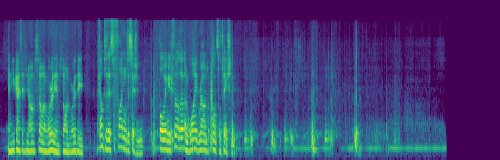 | 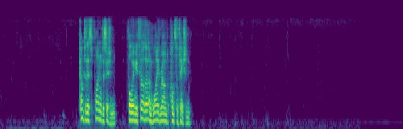 | |||
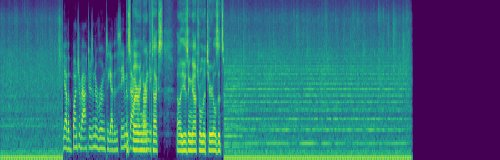 | 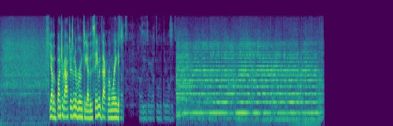 | 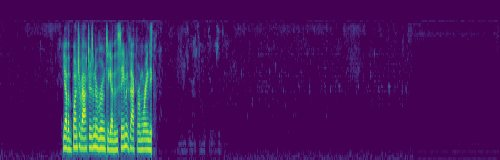 | |||
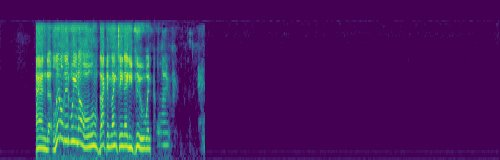 | |||||
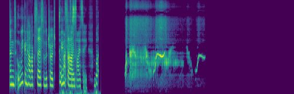 | |||||
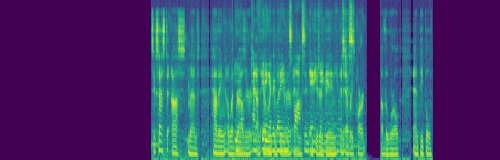 | 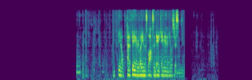 | 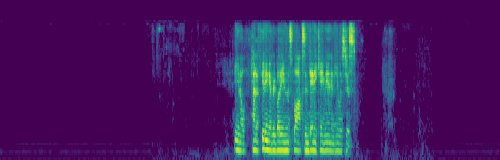 |
Section 7: Caption cue
The cue describes the target’s voice in free-form text. FlowSep processes a fixed 10.24 s window, so its output is shorter.
| Caption | Mixture | Target (reference) | PromptSep-Speaker (ours) | SAM-Audio | FlowSep | PromptSep |
|---|---|---|---|---|---|---|
| male voice | 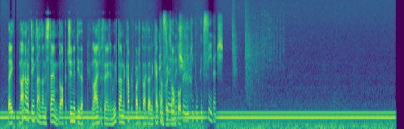 | |||||
| elderly voice | ||||||
| male voice | 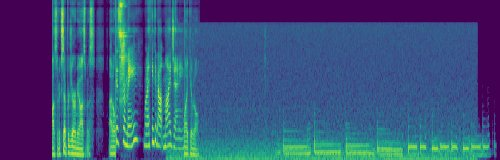 | |||||
| male voice | 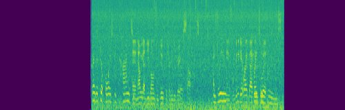 | 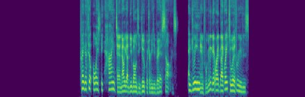 | 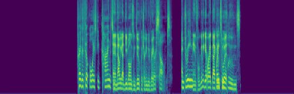 | |||
| adult voice |
Section 8: Ablation: the auxiliary alignment loss
no-aux drops the auxiliary alignment loss; text-dir reverses the cross-attention direction in the alignment module. Both lose track of which speaker the cue refers to.
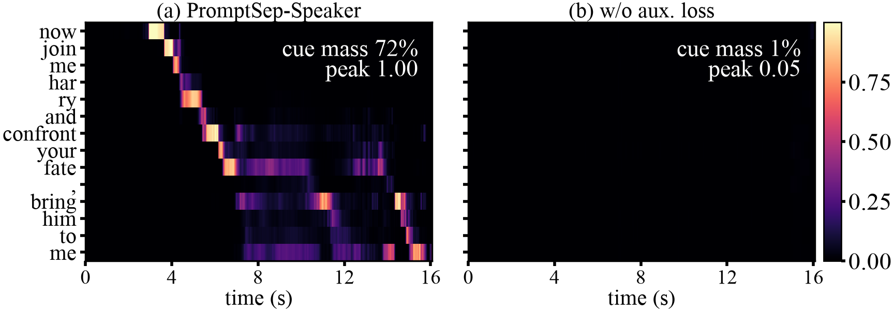
| Cue | Mixture | Target (reference) | PromptSep-Speaker (ours) | no-aux | text-dir |
|---|---|---|---|---|---|
| “Then we could potentially control the Earth's temperature.” | |||||
| “The operation has shut down over smoke shops and seized nearly pounds of illegal” | 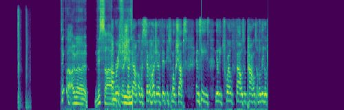 | ||||
| “code create a code that will help a machine actually” | |||||
| Speaker 2 (second to start talking) | |||||
| Speaker 1 (first to start talking) | 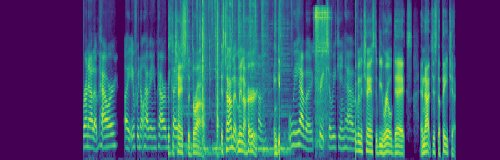 | 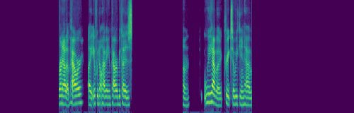 | 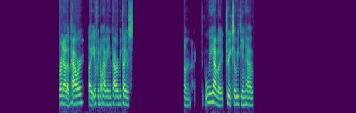 | ||
| Speaker 2 (second to start talking) |
Examples are drawn at random (fixed seed) from the internal evaluation set used in the listening test; none was chosen by hand. The speaker-ID sections are drawn per speaker position, so every position appears. Each example is scaled by one gain, set from its mixture and applied to every clip in the row, so relative levels between the mixture, the target and each output are preserved. DAE-TSE, WeSep, SoloSpeech and FlowSep produce 16 kHz audio, which shows as empty spectrogram above 8 kHz; spectrograms use a mel scale up to 12 kHz.